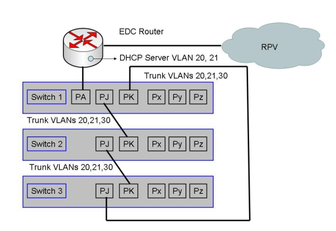
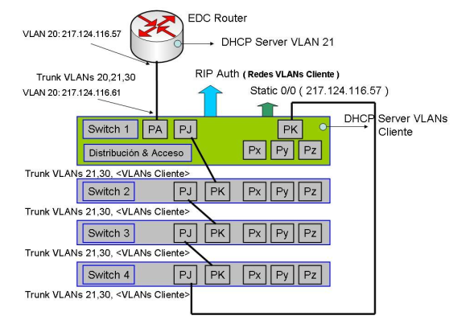

Switching SILAN¶
Servicio de industrialización de LAN. Silan
Introducción¶
SILAN, Servicio e Industrialización de LAN
SILAN, proporciona una solución de conectividad de área local para aquellos clientes que disponen de los servicios MacroLAN y VPN-IP, con la finalidad de que estos clientes, no tengan que disponer de una infraestructura propia para interconectar sus dispositivos.
Este servicio, abarca 4 tipos de LAN de cliente:
LAN Cliente. Conectividad de equipos finales de cliente (PCs, teléfonos IP, servidores, etc.) a switches de TESA
LAN Ibercom. Conectividad de los elementos de telefonía de Ibercom IP (Call Servers y Media Gateways)
LAN Wifi. Conectividad inalámbrica a dispositivos de usuario
SILAN integrado en EDC. Conectividad de dispositivos de cliente a los puertos del EDC
Nota
El servicio SILAN, es un servicio gestionado, por lo que los switches del servicio, serán administrados y monitorizados en remoto desde las dependencias de Telefónica.
Arquitectura y aspectos de la solución¶
Los dispositivos de cliente, se van a conectar a los puertos de los switches del servicio. El número de puertos de los que va a disponer el cliente, dependerá del número y densidad de puertos de los switches que se desplieguen en una sede determinada, hasta la fecha, se contempla la conectividad de hasta 8 switches.
Para la alimentación de dispositivos finales, se utiliza el estándar PoE 802.3af
Nota
Si la conectividad entre switches es superior a 90 m, se utilizará fibra óptica.
No se permite conectar en los switches del servicio, otros switches de cliente que alteren la topoplogía de la LAN. También se cuidará el aspecto de que en los switches, no se puedan conectar servidores de DHCP no legítimos.
En los switches, se contempla la utilización de mecanismos de calidad de servicio para asegurar la gestionabilidad de estos en el caso de que se produjese congestión en la LAN.
Modalidades de servicio¶
Dentro del servicio, se definen tres modalidades:
LAN Ibercom, destinada a la conectividad de los elementos de la solución Ibercom IP en los puntos centrales
LAN cliente básica, clientes que sólo disponen de una VLAN de datos y pueden tener una solución de voz, así como facilidades WiFi. En esta modalidad, los equipos de SILAN tan solo van a realizar funcionaes de conmutación de nivel 2, esta gama de switches, se denominan switches de acceso.
LAN cliente avanzada, el cliente dispone de varias VLANs, en esta modalidad, la conmutación del tráfico entre las distintas VLANs, se realiza en otro elemento diferente al EDC, que se denomina switch de distribución, que puede ser de telefónica o de cliente
Arquitectura de la modalidad básica¶
En esta modalidad, se definen una serie de VLANs estándar para soportar los distintos tipos de tráfico del cliente de voz y datos, así como la gestión de los equipos de la LAN.
Para esta modalidad, se definen las siguientes VLANs
VLAN_DATOS, pensado para soportar todo el tráfico de datos del cliente, no se aplicará mecanismos de priorización de tráfico. El identificador es 20
VLAN_VOZ, pensado para transportar VoIP, aquí, se aplican mecanismos de priorización de tráfico, con el fin de evitar retardos del tráfico ToIP. El identificador es 21
VLAN_GESTION, pensado para el tráfico de gestión de los switches de la LAN, se aplican mecanismos de priorización para garantizar la gestionabilidad de los equipos. El identificador es 30
Nota
Los puertos que se entregan hacia cliente, proporcionan la VLAN 20 en modo nativo, es decir, sin etiquetar y la VLAN 1 etiquetada.
Arquitectura de la modalidad avanzada prestada en servicio¶
La conmutación de tráfico entre las VLANs de cliente, se realizará en switches de distribución. Se definen las siguientes VLANs
VLAN_DATOS, trnasporta el tráfico de datos del cliente (todas sus VLANs) entre los switches de distribución y el EDC, no se aplica priorización y no se propaga hacia los switches de acceso y no se conectan dispositivos finales de cliente. Identificador VLAN 20
vlan_voz, pensado para transportar tráfico de VoIP, se aplican mecanismos de priorización. El identificador de VLAN es 21
VLAN_GESTION, transporta todo el tráfico de gestión de los switches de la LAN, se aplican mecanismos de reserva de caudal para garantizar la gestión de los equipos
VLANs de cliente, VLANs adicionales para transportar todo el tráfico de datos de cliente entre los switches de acceso y los de distribución. Los identificadores, podrán ser cualquiera mayor que 30
En esta modalidad, el switch de distribución, va a poder ofrecer la funcionalidad de DHCP para las VLANs de cliente
Modalidad avanzada en equipo de cliente¶
En esta modalidad, la conmutación del tráfico de las VLANs de clikente, se realizará en un equipo de cliente.
VLAN_DATOS, transporta todo el tráfico entre el equipo de cliente y el EDC, se ha de dar de alta en todos los enlaces existentes entre el EDC y el switch de cliente. Sobre esta VLAN, no se van a conectar equipos finales de cliente. El identofocador es 20
VLAN_VOZ, pensada para conectar dispositivos de telefponía, el identificador es 21
VLAN_GESTION, para transportar el tráfico de gestión de los switches de la LAN, el identificador es 30.
VLANs de cliente, transporta todo el tráfico de datos de cliente entre los switches de acceso y el equipo de cliente. Los identificadores serán cualquiera mayor que 30
Arquitectura de interconexión¶
La arquitectura de interconexión que se ha elegido tiene como propósito cubrir un número limitado de puestos de usuarios para oficinas de tamaño pequeño/mediano, con el menor coste posible, el mayor número de puertos de usuario disponibles y que proporcione redundancia de caminos.
Para la interconexión, se van a seguir las siguientes normas
Todas las VLAN del servicio, se van a pasar mediante un puerto en modo trunk
Las interconexiones entre switches son independientes de las velocidades de sus puertos de acceso, peritiendo que se puedan combinar switches del mismo fabricante con puertos 100/1000. Las soluciones de LAN, son monofabricante, es decir, en una misma sede, solo existiran switches del mismo fabricante
La interconexión del EDC con los switches de acceso se realiza mediante un único puerto configurado en modo trunk, donde se permitiran las VLAN de datos, voz y gestión

Escaenarios de la modalidaad básica¶
Escenario EDC simple con un o más switches¶
En los escenarios de modalidad básica existe la opción de que el propio EDC de la RPV haga de servidor de DHCP para la VLAN de Datos y/o la VLAN de Voz. Cuando estamos en un escenario de EDC simple el servidor de DHCP, como es lógico, residirá en el único EDC de la RPV.
Edcenario EDC doble con dos o más switches¶
En los escenarios con dos EDCs lo mínimo que se soportan son dos switches.
En los escenarios de EDC doble no podremos tener activo el servidor de DHCP en los dos EDCs configurado con el mismo pool de direcciones. En este caso en el EDC primario lo configuraremos para que excluya la asignación de la segunda mitad de la subred y el EDC secundario lo configuraremos para que se excluya la asignación de la primera mitad de la subred, en ambos casos vamos a configurar que por DHCP se dé el mismo default-gateway, que va a ser la dirección virtual del grupo de HSRP, VRRP de la VLAN correspondiente.
Nota
Para evitar que ante la caída de un EDC durante un intervalo de tiempo prolongado algunos dispositivos se pudiesen quedar sin dirección IP, se recomienda sobredimensionar el pool de direcciones de DHCP para que este contenga el doble de direcciones asignables que el número de dispositivos estimados.
Escaenarios de modalidad avanzada¶
Escenario EDC simple con cuatro switches¶
Escenario EDC doble con dos o más switches¶
En escenarios de VPN-IP con EDC doble con reparto de carga, se dividian las redes en dos mitades anunciandose por el EDC principal la mitad de la red sin modificación de métrica y la segunda mitad, con métrica penalizada, haciendose al revés en el EDC secundario. Por otro lado, se crean dos grupos HSRP, donde en estado normal, el primero de ellos, permanece activo el EDC principal, mientras que el segundo permanece en standby y al reves en el EDC secundario.
Así, la mitad de los dispositivos de la LAN apuntaban como gateway por defecto a uno de los grupos HSRP y la otra mitad al otro.
Cuando nos movemos en un modelo con varias VLANs de cliente, el método de reparto de carga por VLAN, se realiza de forma que la mitad de las VLANs va a entrar/salir por un EDC y la otra mitad, por el otro. Para conseguir esto, el switch conectado al EDC principal, anunciará por RIP con métrica normal las redes de la mitad de las VLAN y con métrica penalizada hacia el otro EDC la otra mitad de VLANs. El switch conectado al EDC secundario, hará lo contrario. Los EDC redistribuiran las redes por BGP hacia los PE respetandose las penalizaciones hechas en el protocolo RIP.
En el EDC existiran dos grupos HSRP para una VLAN, el primer grupo, estará activo en el EDC principal y standby en el secndario y viceversa en el EDC secundario. El switch conectado al EDC principal tendrá como ruta por defecto la dirección virtual del primer grupo HSRP y el switch conectado al EDC secundario, tendrá como ruta por defeco la dirección virtual del segundo grupo HSRP.
Los dispositivos finales, van a tener siempre configurada la dirección virtual del HSRP correspondiente a su VLAN

Escenarios de modalidad avanzada con equipo de cliente¶
Escenario simple con varios switches¶

Escenario doble con varios switches¶

Escenarios de stacking¶
Dentro del servicio se han definido una serie de escenarios de stacking. La tecnología de stacking, permite apilar switches de tal forma, que un conjunto de estos, se vean como si fuese un único switch
Nota
Esta tecnología, permite crecer en número de puertos, reduciendo la complejidad de provisión y gestionando todos los elementos como si de uno solo se tratase